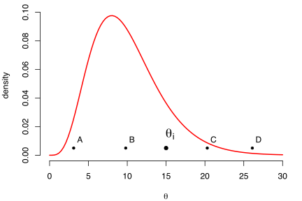
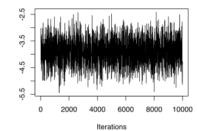
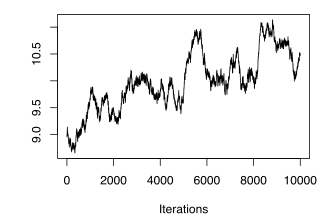
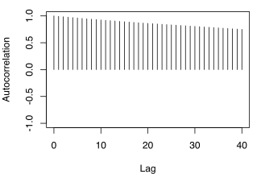
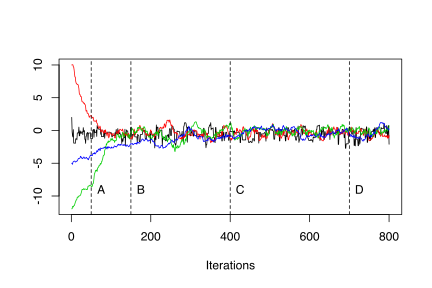

Bayesian Statistics: Techniques and Models
What major challenge do we face with both of the models introduced in non-conjugate models?
⚡ CORRECT We have the posterior distribution up to a normalizing constant, but we are unable to integrate it to obtain important quantities, such as the posterior mean or probability intervals. In low dimensional problems with only a few parameters, we can resort to numerical methods for integration, but this solution only works for a narrow set of models.
☐ WRONG The expression derived is only an approximation to the posterior. We actually know the exact posterior distributions up to a normalizing constant, which is enough to uniquely identify them.
☐ WRONG The posterior distribution derived is not a proper probability distribution with a finite integral. Whenever we use a proper prior with a proper model (which is the case here), we will have a proper posterior distribution.
☐ WRONG We have the full posterior distribution, no methods exist for computing important quantities, such as the posterior mean or probability intervals. In these examples, we don’t even have the full expression for the posterior distribution.
Forecasters often use simulations (usually based on a probability model) to approximate the probability of something they are trying to predict (for example, see https://fivethirtyeight.com/). How do they use the simulations to obtain the forecast probability?
⚡ CORRECT They simulate the system under study many times and count the fraction of times the event of interest occurs.
☐ WRONG They simulate the system under study once. If the event of interest occurs in that simulation, they forecast that it will occur. Monte Carlo estimation relies on taking many samples.
☐ WRONG They calculate the probability directly by integrating the probabilistic model. They then run one simulation, inputting the calculated probability. If the event occurs in the simulation, they forecast that it will occur. Monte Carlo estimation relies on taking many samples.
☐ WRONG They calculate the probability directly within each simulation by integrating the probabilistic model. They then average these probabilities across many simulations. This is a viable approach. However, there is a more basic and common way to use Monte Carlo samples to approximate a probability.
What is the easiest way to increase accuracy of a Monte Carlo estimate?
☐ WRONG Discard samples that appear to be outliers. This practice changes the properties of the sampler, and is no longer guaranteed to produce a reliable answer.
☐ WRONG If sampling multiple variables, keep only the samples for the variable of interest. This is a way to get draws from the marginal distribution of the variable of interest, but it doesn’t increase accuracy.
☐ WRONG Change the random number generator seed. Rejecting simulations until they appear how you want introduces potentially invalidating bias.
⚡ CORRECT Increase the number of samples simulated. There are other ways to set up Monte Carlo simulations with smaller variance (such as “Rao-Blackwellization”), but they usually require more effort.
What is the advantage of using a symmetric proposal distribution \(q(\theta^* \mid \theta_{i-1})\) in a random walk Metropolis-Hastings sampler?
⚡ CORRECT Symmetry in a random walk yields \(q(\theta^* \mid \theta_{i-1}) = q(\theta_{i-1} \mid \theta^*)\), causing both expressions to drop out of the acceptance calculation which then becomes \(g(\theta^*)\, /\, g(\theta_{i-1})\). This simplifies the calculation of the acceptance ratio. This simpler case is often referred to as just a Metropolis sampler. The Hastings part (for potentially non-symmetric proposal distributions) was added after the original Metropolis algorithm.
☐ WRONG Symmetry in a random walk provides a default choice that will not need to be tweaked for performance. The step size in a symmetric random walk is important to the efficiency of the algorithm, and usually must be selected carefully, even iteratively.
☐ WRONG Symmetry in a random walk yields \(g(\theta^*) = g(\theta_{i-1})\), causing both expressions to drop out of the acceptance calculation which then becomes \(q(\theta_{i-1} \mid \theta^*)\, /\, q(\theta^* \mid \theta_{i-1})\).
☐ WRONG Symmetry in a random walk causes the acceptance ratio to be greater than 1. Hence, the candidate is always accepted and we avoid an extra calculation.
In this demonstration, we set up a Markov chain with transition probability matrix \(\begin{pmatrix} .365 & .635 \\ 1 & 0 \end{pmatrix}\) and stationary distribution \((.612, \, .388)\) where the first state represents \(\theta=\text{fair}\) and the second state represents \(\theta = \text{loaded}\). If we were to simulate this Markov chain for many iterations, approximately what fraction of the time would the chain be in \(\theta = \text{fair}\)?
☐ WRONG .365 This is the transition probability in the chain of moving from \(\theta=\text{fair}\) to \(\theta=\text{fair}\).
⚡ CORRECT .612 This is the stationary (or marginal) probability that at any given iteration, the state is “fair.” Because we set up this Markov chain using a Metropolis-Hastings algorithm with the posterior distribution as the stationary distribution, this is also the posterior probability that \(\theta = \text{fair}\).
☐ WRONG .388 This is the stationary probability that \(\theta = \text{loaded}\).
☐ WRONG .635 This is the transition probability in the chain of moving from \(\theta=\text{fair}\) to \(\theta=\text{loaded}\).
In what way does the Gibbs sampling algorithm simplify our task of updating multiple parameters in MCMC?
☐ WRONG The full conditional distribution eliminates the need to calculate a Metropolis-Hastings acceptance ratio. This is true if the full conditional distribution is a standard distribution that we can easily sample, but this is not always the case.
☐ WRONG It updates all parameters at once, using a joint proposal distribution as part of a Metropolis-Hastings algorithm. This is an alternative to Gibbs sampling.
⚡ CORRECT It divides the process into updating one parameter at a time using (potentially convenient) full conditional distributions. The price we pay for this convenience is 1) the work required to find full conditional distributions and 2) the sampler may require more iterations to fully explore the posterior distribution (more on this in Lesson 6). It is also possible to run a Gibbs sampler that draws from the “full” conditional distribution of multiple parameters. We would then cycle through and update blocks of parameters.
☐ WRONG Finding full conditional distributions requires less work than finding the unnormalized joint posterior distribution of all parameters. This is sometimes true, especially if we use conjugate priors in hierarchical models. However, one typically finds the full conditionals by starting with the unnormalized joint posterior distribution of all parameters.
If we implement the Gibbs sampler for the model described in this segment, how do we complete an update for \(\mu\)?
☐ WRONG Draw from the inverse-gamma full conditional distribution for \(\mu\). The full conditional distribution for \(\mu\) is the conjugate normal.
⚡ CORRECT Draw from the normal full conditional distribution for \(\mu\). Since the full conditional distribution is a normal distribution, this update is easy to simulate, and we can do it without drawing a candidate and deciding whether to accept it.
☐ WRONG Draw a candidate \(\mu^*\) from a proposal distribution and use the normal full conditional for \(\mu\) to evaluate the acceptance ratio. This is a valid approach. However, it is much less efficient than simply drawing from the full conditional distribution (which in this case is just a normal distribution) directly.
☐ WRONG Draw a candidate \(\mu^*\) from a proposal distribution and use the full joint posterior for \(\mu\) and \(\sigma^2\) to evaluate the acceptance ratio. This is a valid approach. However, it is much less efficient than simply drawing from the full conditional distribution (which in this case is just a normal distribution) directly.
If we have kk different predictor variables \(x_1, x_2, \ldots, x_k\), what is the primary advantage of fitting joint a linear model (multiple regression, \(\text{E}(y) = \beta_0 + \beta_1 x_1 + \ldots + \beta_k x_k\)) over fitting \(k\) simple linear regressions (\(\text{E}(y) = \beta_0 + \beta_j x_j\)), one for each predictor?
⚡ CORRECT Each coefficient in the multiple regression model accounts for the presence of the other predictors whereas the coefficients in the simple linear regressions don’t. The coefficient \(\beta_1\) measures the change in \(\text{E}(y)\) due to \(x_1\) while holding \(x_j\) constant for all other \(j\ne1\).
☐ WRONG The coefficients in the multiple regression model can fit nonlinear relationships between the predictors and response which is not possible with simple linear regressions. This is true if the different \(x\) variables represent transformations (such as polynomial powers of) a single or a few \(x\) variables. However, if all predictors are different variables, multiple regression is subject to the same linearity restrictions as simple linear regression.
☐ WRONG Fitting \(k\) simple linear regressions forces us to reconcile the \(k\) different estimates of the intercept \(\beta_0\). The intercept is usually not a focal point of inference. Intercepts can vary widely when we add or remove predictors, but this doesn’t typically change the interpretation of the model.
☐ WRONG We only have to perform one (instead of \(k\)) residual analysis. While this is true, there are more compelling reasons to choose a multiple regression model.
ANOVA is an appropriate model in which of the following scenarios?
☐ WRONG We fit a linear model where the response is income and the only predictor is the income for the previous year. Unless the income variable is binned into groups such as “low,” “medium,” and “high,” it is typically treated as a continuous covariate.
☐ WRONG We fit a linear model where the response is income and the only predictor is age in years. Unless the age variable is binned into groups such as “early career,” “mid career,” and “late career,” it is typically treated as a continuous covariate.
☐ WRONG We fit a linear model where the response is income and there are two predictors: years of experience and income for the previous year. Unless years of experience and income are binned into discrete groups, they are typically treated as continuous covariates.
⚡ CORRECT We fit a linear model where the response is income and the only predictor is level of education, which is one of: no secondary education diploma, secondary education diploma, or college degree. This is the only option with categorical covariates. In this example, the levels of the factor variable have a natural ordering, so we could also consider models for ordinal covariates.
If we have three predictor variables \(x_i = ( x_{1,i}, x_{2,i}, x_{3,i} )\), what would the likelihood part of the hierarchical representation of a logistic regression model look like?
☐ WRONG \(y_i \mid x_i, \beta \overset{\text{ind}}{\sim} \text{Bern} \left( \log[ \beta_0 + \beta_1 x_{1,i} + \beta_2 x_{2,i} + \beta_3 x_{3,i} ] \right)\)
⚡ CORRECT \(y_i \mid x_i, \beta \overset{\text{ind}}{\sim} \text{Bern} \left( \frac{ 1 }{1 + \exp[ -( \beta_0 + \beta_1 x_{1,i} + \beta_2 x_{2,i} + \beta_3 x_{3,i}) ] } \right)\) Here we incorporated the (inverse) link function directly into the likelihood rather than writing it with two lines.
☐ WRONG \(y_i \mid x_i, \beta \overset{\text{ind}}{\sim} \text{Bern} \left( \exp[ -( \beta_0 + \beta_1 x_{1,i} + \beta_2 x_{2,i} + \beta_3 x_{3,i}) ] \right)\)
☐ WRONG \(y_i \mid x_i, \beta \overset{\text{ind}}{\sim} \text{Bern} \left( \beta_0 + \beta_1 x_{1,i} + \beta_2 x_{2,i} + \beta_3 x_{3,i} \right)\)
Lession 1 Quizz
Which objective of statistical modeling is best illustrated by the following example?
You fit a linear regression of monthly stock values for your company. You use the estimates and recent stock history to calculate a forecast of the stock’s value for the next three months.
☐ WRONG Quantify uncertainty
☐ WRONG Inference
☐ WRONG Hypothesis testing
⚡ CORRECT Prediction Forecasting is another word for predicting, especially with time series data.
Which objective of statistical modeling is best illustrated by the following example?
A biologist proposes a treatment to decrease genetic variation in plant size. She conducts an experiment and asks you (the statistician) to analyze the data to conclude whether a 10% decrease in variation has occurred.
☐ WRONG Quantify uncertainty
☐ WRONG Inference
⚡ CORRECT Hypothesis testing The scientist has a specific hypothesis in mind and asks you to evaluate the evidence for or against it.
☐ WRONG Prediction
Which objective of statistical modeling is best illustrated by the following example?
The same biologist form the previous question asks you how many experiments would be necessary to have a 95% chance at detecting a 10% decrease in plant variation.
⚡ CORRECT Quantify uncertainty Most estimates from data come with uncertainty. Statisticians are often called upon to evaluate how much we can trust the results.
☐ WRONG Inference
☐ WRONG Hypothesis testing
☐ WRONG Prediction
Which of the following scenarios best illustrates the statistical modeling objective of inference?
☐ WRONG A natural language processing algorithm analyzes the first four words of a sentence and provides words to complete the sentence.
☐ WRONG A venture capitalist uses data about several companies to build a model and makes recommendations about which company to invest in next based on growth forecasts.
⚡ CORRECT A social scientist collects data and detects positive correlation between sleep deprivation and traffic accidents. Here the social scientist made an inference about the relationship between two variables.
☐ WRONG A model inputs academic performance of 1000 students and predicts which student will be valedictorian after another year of school.
Which step in the statistical modeling cycle was not followed in the following scenario?
Susan gathers data recording heights of children and fits a linear regression predicting height from age. To her surprise, the model does not predict well the heights for ages 14-17 (because the growth rate changes with age), both for children included in the original data as well as other children outside the model training data.
☐ WRONG Plan and properly collect relevant data
☐ WRONG Fit the model The scenario does imply that the model was fit. However, it is possible that surprising results could stem from problems fitting the model.
☐ WRONG Use the model Since Susan was predicting heights for children outside the original data set, she was using the model.
⚡ CORRECT Explore the data This is also an issue of understanding the problem. A linear model is inappropriate in this scenario because human growth is not linear. A scatter plot of the data would quickly reveal this nonlinear relationship.
Which of the following is a possible consequence of failure to plan and properly collect relevant data?
⚡ CORRECT Your analysis may produce incomplete or misleading results. Unless there are fundamental problems with the data (e.g., invalid numbers, etc.) statistical models will fit to any data and return results. It is the statistician’s job to make sure the data properly measure what you intend to measure, that the results are valid, and to interpret them.
☐ WRONG You may not be able to visually explore the data.
☐ WRONG You will not produce enough data to make conclusions with a sufficient degree of confidence.
☐ WRONG Your selected model will not be able to fit the data.
For Questions 6 and 7, consider the following:
Xie operates a bakery and wants to use a statistical model to determine how many loaves of bread he should bake each day in preparation for weekday lunch hours. He decides to fit a Poisson model to count the demand for bread. He selects two weeks which have typical business, and for those two weeks, counts how many loaves are sold during the lunch hour each day. He fits the model, which estimates that the daily demand averages 22.3 loaves.
Over the next month, Xie bakes 23 loaves each day, but is disappointed to find that on most days he has excess bread and on a few days (usually Mondays), he runs out of loaves early.
Which of the following steps of the modeling process did Xie skip?
☐ WRONG Understand the problem
☐ WRONG Postulate a model
☐ WRONG Fit the model
⚡ CORRECT Check the model and iterate Xie skipped directly from collecting data and fitting the model to using the model for future production. He skipped the steps of exploring the data and checking to see if the model fit adequately. Because the model was lacking, his use of the model produced less desirable results.
☐ WRONG Use the model
What might you recommend Xie do next to fix this omission and improve his predictive performance?
☐ WRONG Abandon his statistical modeling initiative.
☐ WRONG Collect three more weeks of data from his bakery and other bakeries throughout the city. Re-fit the same model to the extra data and follow the results based on more data. Collecting more data is probably a good idea, unless the data are not relevant. Data from other bakeries are fairly relevant, but demand may not be the same as at Xie’s bakery. The problem appears to be with the model, not with the data.
⚡ CORRECT Plot daily demand and model predictions against the day of the week to check for patterns that may account for the extra variability. Fit and check a new model which accounts for this. Higher demand on Mondays suggests that the time of the week may help explain some of the day-to-day variability in demand. This could be incorporated by fitting different Poisson models for different weekdays, or a Poisson regression incorporating explanatory variables (we will explore these in Lesson 10).
☐ WRONG Trust the current model and continue to produce 23 loaves daily, since in the long-run average, his error is zero.
Lession 2 Quizz
Which of the following is one major difference between the frequentist and Bayesian approach to modeling data?
☐ WRONG Frequentist models require a guess of parameter values to initialize models while Bayesian models require initial distributions for the parameters.
⚡ CORRECT Frequentists treat the unknown parameters as fixed (constant) while Bayesians treat unknown parameters as random variables. The only random variables in frequentist models are the data. The Bayesian paradigm also uses probability to describe one’s uncertainty about unknown model parameters.
☐ WRONG Frequentist models are deterministic (don’t use probability) while Bayesian models are stochastic (based on probability). Both paradigms begin with the same object: a probability model that could have generated the data.
☐ WRONG The frequentist paradigm treats the data as fixed while the Bayesian paradigm considers data to be random. In the frequentist paradigm, data is the only thing considered to be random. Bayesians build a probability model for data, and then condition on the observed data.
Suppose we have a statistical model with unknown parameter \(\theta\)θ, and we assume a normal prior \(\theta \sim \text{N}(\mu_0, \sigma_0^2)\), where \(\mu_0\) is the prior mean and \(\sigma_0^2\) is the prior variance. What does increasing \(\sigma_0^2\) say about our prior beliefs about \(\theta\)?
☐ WRONG Increasing the variance of the prior narrows the range of what we think \(\theta\) might be, indicating greater confidence in our prior mean guess \(\mu_0\).
⚡ CORRECT Increasing the variance of the prior widens the range of what we think \(\theta\) might be, indicating less confidence in our prior mean guess \(\mu_0\). This also lowers the “effective sample size” of the prior, so that the data become more influential in determining the posterior for \(\theta\).
☐ WRONG Increasing the variance of the prior narrows the range of what we think \(\theta\) might be, indicating less confidence in our prior mean guess \(\mu_0\).
☐ WRONG Increasing the variance of the prior widens the range of what we think \(\theta\) might be, indicating greater confidence in our prior mean guess \(\mu_0\).
In the lesson, we presented Bayes’ theorem for the case where parameters are continuous. What is the correct expression for the posterior distribution of \(\theta\) if it is discrete (takes on only specific values)?
⚡ CORRECT \(p(\theta_j \mid y) = \frac{ p(y \mid \theta_j) \cdot p(\theta_j) }{ \sum_j p(y \mid \theta_j) \cdot p(\theta_j) }\)
☐ WRONG \(p(\theta \mid y) = \frac{ p(y \mid \theta) \cdot p(\theta) }{ \int p(y \mid \theta) \cdot p(\theta)\, d\theta }\) This is the discrete version of Bayes’ theorem.
☐ WRONG \(p(\theta) = \int p(\theta \mid y) \cdot p(y) \, dy\)
☐ WRONG \(p(\theta) = \sum_j p(\theta \mid y_j) \cdot p(y_j)\)
For Questions 4 and 5, refer to the following scenario.
In the quiz for Lesson 1, we described Xie’s model for predicting demand for bread at his bakery. During the lunch hour on a given day, the number of orders (the response variable) follows a Poisson distribution. All days have the same mean (expected number of orders). Xie is a Bayesian, so he selects a conjugate gamma prior for the mean with shape \(3\) and rate \(1 / 15\). He collects data on Monday through Friday for two weeks.
Which of the following hierarchical models represents this scenario?
⚡ CORRECT
\(y_i \mid \lambda \overset{\text{iid}}{\sim} \text{Pois}(\lambda) \quad \text{for } i = 1, \ldots, 10,\)
\(\lambda \sim \text{Gamma}(3, 1/15)\)
The likelihood is Poisson with the same mean for all observations, called \(\lambda\) here. The mean \(\lambda\) has a gamma prior.
☐ WRONG
\(y_i \mid \lambda_i \overset{\text{ind}}{\sim} \text{Pois}(\lambda_i) \quad \text{for } i = 1, \ldots, 10,\)
\(\lambda_i \mid \alpha \sim \text{Gamma}(\alpha, 1/15)\)
\(\alpha \sim \text{Gamma}(3.0, 1.0)\)
☐ WRONG
\(y_i \mid \lambda \overset{\text{iid}}{\sim} \text{Pois} ( \lambda ) \quad \text{for } i=1,\ldots,10,\)
\(\lambda \mid \mu \sim \text{Gamma}(\mu, 1/15)\)
\(\mu \sim \text{N}(3, 1.0^2)\)
☐ WRONG
\(y_i \mid \mu \overset{\text{iid}}{\sim} \text{N} ( \mu, 1.0^2 ) \quad \text{for } i=1,\ldots,10,\)
\(\mu \sim \text{N}(3, 15^2)\)
Which of the following graphical depictions represents the model from Xie’s scenario?

The observed data variables each depend on the mean demand.
Graphical representations of models generally do not identify the distributions of the variables (nodes), but they do reveal the structure of dependence among the variables.
Identify which of the following hierarchical models is depicted in the graphical representation below.

⚡ CORRECT
\(x_{i,j} \mid \alpha_j, \beta \overset{\text{ind}}{\sim} \text{Gamma}(\alpha_j, \beta), \quad i = 1,\ldots,n, \quad j=1,\ldots,m\)
\(\beta \sim \text{Exp}(b_0)\)
\(\alpha_j \mid \phi \overset{\text{iid}}{\sim} \text{Exp} (\phi), \quad j=1,\ldots,m\)
\(\phi \sim \text{Exp}(r_0)\)
\(x_{i,j}\) depends on \(\alpha_j\) and \(\beta\). \(\beta\) doesn’t depend on anything. \(\alpha_j\) depends on \(\phi\).
Notice that the \(x_{i,j}\) variables are independent (denoted \(\overset{\text{ind}}{\sim}\)) rather than independent and identically distributed (\(\overset{\text{iid}}{\sim}\)) because the distribution of \(x_{i,j}\) changes with the index \(j\) (they have different shape parameters \(\alpha_j\)).
☐ WRONG
\(x_{i,j} \mid \alpha_j, \beta \overset{\text{ind}}{\sim} \text{Gamma}(\alpha_j, \beta), \quad i = 1,\ldots,n, \quad j=1,\ldots,m\)
\(\beta \sim \text{Exp}(b_0)\)
\(\alpha_j \sim \text{Exp} (a_0), \quad j=1,\ldots,m\)
\(\phi \sim \text{Exp}(r_0)\)
☐ WRONG
\(x_{i,j} \mid \alpha_i, \beta_j \overset{\text{ind}}{\sim} \text{Gamma}(\alpha_i, \beta_j), \quad i = 1,\ldots,n, \quad j=1,\ldots,m\)
\(\beta_j \mid \phi \overset{\text{iid}}{\sim} \text{Exp}(\phi), \quad j=1,\ldots,m\)
\(\alpha_i \mid \phi \overset{\text{iid}}{\sim} \text{Exp} (\phi), \quad i=1,\ldots,n\)
\(\phi \sim \text{Exp}(r_0)\)
☐ WRONG
\(x_{i,j} \mid \alpha, \beta \overset{\text{iid}}{\sim} \text{Gamma}(\alpha, \beta), \quad i = 1,\ldots,n, \quad j=1,\ldots,m\)
\(\beta \sim \text{Exp}(b_0)\)
\(\alpha \sim \text{Exp} (a_0)\)
\(\phi \sim \text{Exp}(r_0)\)
Consider the following model for a binary outcome \(y\):
\(y_i \mid \theta_i \overset{\text{ind}}{\sim} \text{Bern}(\theta_i), \quad i=1,\ldots,6\)
\(\theta_i \mid \alpha \overset{\text{iid}}{\sim} \text{Beta}(\alpha, b_0), \quad i=1,\ldots,6\)
\(\alpha \sim \text{Exp}(r_0)\)
where \(\theta_i\) is the probability of success on trial \(i\). What is the expression for the joint distribution of all variables, written as \(p(y_1, \ldots, y_6, \theta_1, \ldots, \theta_6, \alpha)\) and denoted by \(p(\cdots)\)? You may ignore the indicator functions specifying the valid ranges of the variables (although the expressions are technically incorrect without them).
Hint:
The PMF for a Bernoulli random variable is \(f_y(y \mid \theta) = \theta^{y} (1-\theta)^{1-y}\) for \(y=0\) or \(y=1\) and \(0 < \theta < 1\).
The PDF for a Beta random variable is \(f_\theta( \theta \mid \alpha, \beta) = \frac{\Gamma(\alpha + \beta)}{\Gamma(\alpha) \Gamma(\beta)} \theta^{\alpha - 1} (1 - \theta)^{\beta - 1}\) where \(\Gamma()\) is the gamma function, \(0 < \theta < 1\) and \(\alpha, \beta > 0\).
The PDF for an exponential random variable is \(f_\alpha( \alpha \mid \lambda) = \lambda \exp(-\lambda \alpha)\) for \(\lambda, \alpha > 0\).
⚡ CORRECT \(p(\cdots) = \prod_{i=1}^6 \left[ \theta_i^{y_i} (1-\theta_i)^{1-y_i} \frac{\Gamma(\alpha + b_0)}{\Gamma(\alpha) \Gamma(b_0)} \theta_i^{\alpha - 1} (1 - \theta_i)^{b_0 - 1} \right] \cdot r_0 \exp(-r_0 \alpha)\) This expression is proportional to the posterior distribution \(p( \theta_1, \ldots, \theta_6, \alpha \mid y_1, \ldots, y_6 )\). Unfortunately, it does not correspond with a common distribution, so evaluating this posterior would be very challenging (at least until we learn MCMC techniques in the next module).
☐ WRONG \(p(\cdots) = \prod_{i=1}^6 \left[ \theta_i^{y_i} (1-\theta_i)^{1-y_i} \right] \cdot \frac{\Gamma(\alpha + b_0)}{\Gamma(\alpha) \Gamma(b_0)} \theta^{\alpha - 1} (1 - \theta)^{b_0 - 1} \cdot r_0 \exp(-r_0 \alpha)\)
☐ WRONG \(p(\cdots) = \prod_{i=1}^6 \left[ \theta_i^{y_i} (1-\theta_i)^{1-y_i} \frac{\Gamma(\alpha + b_0)}{\Gamma(\alpha) \Gamma(b_0)} \theta_i^{\alpha - 1} (1 - \theta_i)^{b_0 - 1} r_0 \exp(-r_0 \alpha) \right]\)
☐ WRONG \(p(\cdots) = \prod_{i=1}^6 \left[ \theta_i^{y_i} (1-\theta_i)^{1-y_i} \frac{\Gamma(\alpha + b_0)}{\Gamma(\alpha) \Gamma(b_0)} \theta_i^{\alpha - 1} (1 - \theta_i)^{b_0 - 1} \right]\)
In a Bayesian model, let \(y\) denote all the data and \(\theta\) denote all the parameters. Which of the following statements about the relationship between the joint distribution of all variables \(p(y, \theta) = p(\cdots)\) and the posterior distribution \(p(\theta \mid y)\) is true?
☐ WRONG Neither is sufficient alone–they are both necessary to make inferences about \(\theta\).
☐ WRONG The joint distribution \(p(y,\theta)\) is equal to the posterior distribution times a function \(f(\theta)\) which contains the modification (update) of the prior. The joint distribution is equal to the posterior distribution times the marginal distribution of \(y\), which doesn’t contain \(\theta\).
⚡ CORRECT They are proportional to each other so that \(p(y, \theta) = c \cdot p(\theta \mid y)\) where \(c\) is a constant number that doesn’t involve \(\theta\) at all. This fact allows us to work with the joint distribution \(p(y, \theta)\) which is usually easier to compute. MCMC methods, which we will learn in the next module, only require us to know the posterior up to proportionality.
☐ WRONG They are actually equal to each other so that \(p(y, \theta) = p(\theta \mid y)\).
Lession 3 Quizz
If a random variable \(X\) follows a standard uniform distribution (\(X \sim \text{Unif}(0,1)\)), then the PDF of \(X\) is \(p(x) = 1\) for \(0 \le x \le 1\).
We can use Monte Carlo simulation of \(X\) to approximate the following integral: \(\int_0^1 x^2 dx = \int_0^1 x^2 \cdot 1 dx = \int_0^1 x^2 \cdot p(x) dx = \text{E}(X^2)\).
If we simulate 1000 independent samples from the standard uniform distribution and call them \(x_i^*\) for \(i=1,\ldots,1000\), which of the following calculations will approximate the integral above?
⚡ CORRECT \(\frac{1}{1000} \sum_{i=1}^{1000} {x_i^*}^2\) If we want to approximate \(\text{E}(g(X))\) for some function \(g()\), then we need to apply \(g()\) to the samples and then average them. In this example we have \(g(x) = x^2\).
☐ WRONG \(\frac{1}{1000} \sum_{i=1}^{1000} {(x_i^* - \overline{x^*})}^2\) where \(\overline{x^*}\) is the calculated average of the \(x_i^*\) samples.
☐ WRONG \(\frac{1}{1000} \sum_{i=1}^{1000} x_i^*\)
☐ WRONG \(\left( \frac{1}{1000} \sum_{i=1}^{1000} x_i^* \right)^2\)
Suppose we simulate 1000 samples from a \(\text{Unif}(0, \pi)\) distribution (which has PDF \(p(x) = \frac{1}{\pi}\) for \(0 \le x \le \pi\)) and call the samples \(x_i^*\) for \(i = 1, \ldots, 1000\).
If we use these samples to calculate \(\frac{1}{1000} \sum_{i=1}^{1000} \sin( x_i^* )\), what integral are we approximating?
☐ WRONG \(\int_0^1 \sin( x ) dx\)
⚡ CORRECT \(\int_0^\pi \frac{ \sin( x ) }{ \pi } dx\) This is \(\text{E}(\sin(X)) = \int_0^\pi \sin(x) \cdot p(x) dx\).
☐ WRONG \(\int_{-\infty}^\infty \sin( x ) dx\)
☐ WRONG \(\int_0^1 \frac{ \sin( x ) }{ \pi } dx\)
Suppose random variables \(X\) and \(Y\) have a joint probability distribution \(p(X, Y)\). Suppose we simulate 1000 samples from this distribution, which gives us 1000 \((x_i^*, y_i^*)\) pairs.
If we count how many of these pairs satisfy the condition \(x_i^* < y_i^*\) and divide the result by 1000, what quantity are we approximating via Monte Carlo simulation?
☐ WRONG \(\text{E}( XY)\)
☐ WRONG \(\text{Pr}[ \text{E}(X) < \text{E}(Y) ]\)
☐ WRONG \(\text{Pr}[ X < \text{E}(Y) ]\)
⚡ CORRECT \(\text{Pr}[ X < Y]\) This is also \(\text{E} ( I_{x<y} ) = \int \int I_{x<y} \cdot p(x,y) \, dx \, dy\).
If we simulate 100 samples from a \(\text{Gamma} (2, 1)\) distribution, what is the approximate distribution of the sample average \(\overline{x^*} = \frac{1}{100} \sum_{i=1}^{100} x_i^*\)?
Hint: the mean and variance of a \(\text{Gamma}(a,b)\) random variable are \(a / b\) and \(a / b^2\) respectively.
☐ WRONG \(\text{Gamma}(2, 0.01)\)
☐ WRONG \(\text{Gamma}(2, 1)\)
☐ WRONG \(\text{N}(2, 2)\)
⚡ CORRECT \(\text{N}(2, 0.02)\) Due to the central limit theorem, the approximating distribution is normal with mean equal to the mean of the original variable, and with variance equal to the variance of the original variable divided by the sample size.
For Questions 5 and 6, consider the following scenario:
Laura keeps record of her loan applications and performs a Bayesian analysis of her success rate \(\theta\). Her analysis yields a \(\text{Beta}(5,3)\) posterior distribution for \(\theta\).
The posterior mean for \(\theta\) is equal to \(\frac{5}{5+3} = 0.625\). However, Laura likes to think in terms of the odds of succeeding, defined as \(\frac{\theta}{1 - \theta}\), the probability of success divided by the probability of failure.
Use R to simulate a large number of samples (more than 10,000) from the posterior distribution for \(\theta\) and use these samples to approximate the posterior mean for Laura’s odds of success (\(\text{E}(\frac{\theta}{1-\theta}\)).
Report your answer to at least one decimal place.
2.535508
The posterior distribution of the odds (which you can plot with your samples if you create a new variable for the odds) is heavily skewed right, so the posterior mean for the odds (2.5) is much larger than the odds calculated from the posterior mean of \(\theta\) (\(0.625 / 0.375 \approx 1.667\)). The posterior median of the odds might be a better measure in this case.
theta = rbeta(9999, 5, 3)
alpha = theta / (1 - theta)
mean( alpha )
Laura also wants to know the posterior probability that her odds of success on loan applications is greater than 1.0 (in other words, better than 50:50 odds).
Use your Monte Carlo sample from the distribution of \(\theta\) to approximate the probability that \(\frac{\theta}{1-\theta}\) is greater than 1.0.
Report your answer to at least two decimal places.
0.7779
This is also equivalent to the posterior probability that \(\theta > 0.5\).
theta = rbeta(9999, 5, 3)
alpha = theta / (1 - theta)
mean( alpha )
mean( alpha > 1.0 )
Use a (large) Monte Carlo sample to approximate the 0.3 quantile of the standard normal distribution (\(\text{N}(0,1)\)), the number such that the probability of being less than it is 0.3.
Use the \(\tt quantile\) function in R. You can of course check your answer using the \(\tt qnorm\) function.
Report your answer to at least two decimal places.
-0.5244005
quantile( rnorm(9999, 0.0, 1.0), 0.3 )
qnorm(0.3, 0.0, 1.0)
To measure how accurate our Monte Carlo approximations are, we can use the central limit theorem. If the number of samples drawn \(m\) is large, then the Monte Carlo sample mean \(\overline{\theta^*}\) used to estimate \(\text{E}(\theta)\) approximately follows a normal distribution with mean \(\text{E}(\theta)\) and variance \(\text{Var}(\theta) / m\). If we substitute the sample variance for \(\text{Var}(\theta)\), we can get a rough estimate of our Monte Carlo standard error (or standard deviation).
Suppose we have 100 samples from our posterior distribution for \(\theta\), called \(\theta_i^*\), and that the sample variance of these draws is 5.2. A rough estimate of our Monte Carlo standard error would then be \(\sqrt{ 5.2 / 100 } \approx 0.228\). So our estimate \(\overline{\theta^*}\) is probably within about 0.456 0.456 (two standard errors) of the true \(\text{E}(\theta)\).
What does the standard error of our Monte Carlo estimate become if we increase our sample size to 5,000? Assume that the sample variance of the draws is still 5.2.
Report your answer to at least three decimal places.
0.03224903
This is just \(\sqrt{5.2 / 5000}\).
Markov Chains Quizz
All but one of the following scenarios describes a valid Markov chain. Which one is not a Markov chain?
☐ WRONG At any given hour, the number of customers entering a grocery store follows a Poisson distribution. The number of customers in the store who leave during that hour also follows a Poisson distribution (only up to as many people are in the store). A clerk reports the total number of customers in the store \(X_t\) at the end of hour \(t\) The distribution of total customers at the end of hour \(t\) will depend only on the number of customers at the end of hour \(t-1\). Past totals from previous hours are irrelevant..
☐ WRONG While driving through a city with square blocks, you roll a six-sided die each time you come to an intersection. If the die shows 1, 2, 3, or 4, then you turn left. If the die shows 5 or 6, you turn right. Each time you reach an intersection, you report your coordinates \(X_t\).
☐ WRONG Three friends take turns playing chess with the following rules: the player who sits out the current round plays the winner in the next round. Player A, who has 0.7 probability of winning any game regardless of opponent, keeps track of whether he plays in game \(t\) with an indicator variable \(X_t\).
⚡ CORRECT Suppose you have a special savings account which accrues interest according to the following rules: the total amount deposited in a given month will earn \(10(1/2)^{(r-1)}\)% interest in the rrth month after the deposit. For example, if the deposits in January total $100, then you will earn $10 interest in January, $5 interest at the end of February, $2.50 in March, etc. In addition to the interest from January, if you deposit $80 in February, you will earn an additional $8 at the end of February, $4 at the end of March, and so forth. The total amount of money deposited in a given month follows a gamma distribution. Let \(X_t\) be the total dollars in your account, including all deposits and interest up to the end of month \(t\). Because of these particular rules, the total in the account at the end of the previous month does not provide enough information to create a probability distribution for the current month. You need to know the amount deposited in each month to determine how much interest it qualifies for this month. To be a Markov chain, the probability distribution for \(X_{t+1}\) must depend only on \(X_t\) and not the older history \(X_{t-1}, X_{t-2}, \ldots\).
Which of the following gives the transition probability matrix for the chess example in the previous question? The first row and column correspond to \(X=0\) (player A not playing) while the second row and column correspond to \(X=1\) (player A playing).
⚡ CORRECT \(\begin{pmatrix} 0 & 1 \\ 0.3 & 0.7 \end{pmatrix}\)
☐ WRONG \(\begin{pmatrix} 0.3 & 0 \\ 0.7 & 1 \end{pmatrix}\)
☐ WRONG \(\begin{pmatrix} 0.7 & 0 \\ 0.3 & 1 \end{pmatrix}\)
☐ WRONG \(\begin{pmatrix} 0 & 0.3 \\ 1 & 0.7 \end{pmatrix}\)
Continuing the chess example, suppose that the first game is between Players B and C. What is the probability that Player A will play in Game 4? Round your answer to two decimal places.
0.79
Since we know Player A will not play in Game 1, the initial distribution is \((1, 0)\). We now matrix multiply this by the transition matrix for three steps into the future, \(Q^3\). This yields the distribution for \(X\) in Game 4.
The distribution for XX in Game 4 in this case is \((1,0) Q^3\) (using the initial distribution and three transitions).
Which of the following is the stationary distribution for \(X\) in the chess example?
☐ WRONG ( .769, .231 )
☐ WRONG ( .250, .750 )
☐ WRONG ( .750, .250 )
☐ WRONG ( 0.0, 1.0 )
⚡ CORRECT ( .231, .769 )
If the players draw from the stationary distribution in Question 4 to decide whether Player A participates in Game 1, what is the probability that Player A will participate in Game 4? Round your answer to two decimal places.
0.763
Follow the same procedure as in Question 3, or notice that since we are starting in the stationary distribution, the distribution of \(X\) doesn’t change with transitions.
This is just the stationary probability of Player A playing. If the chain starts in the stationary distribution, the probability of Player A playing in the next game, the game after that, and so forth, is always this stationary probability.
Lession 4 Quizz
In which situation would we choose to use a Metropolis-Hastings (or any MCMC) sampler rather than straightforward Monte Carlo sampling?
☐ WRONG The data (likelihood) come from a Markov chain.
☐ WRONG Monte Carlo estimation is easier than calculating the integral required to obtain the mean of the target distribution.
☐ WRONG The target distribution follows a Markov chain.
⚡ CORRECT There is no easy way to simulate independent draws from the target distribution. If we could, straightforward Monte Carlo sampling would be preferable.
If we employed an independent Metropolis-Hastings algorithm (in which the candidate-generating distribution q does not depend on the previous iteration of the chain), what would happen if we skipped the acceptance ratio step and always accepted candidate draws?
⚡ CORRECT The resulting sample would be a Monte Carlo simulation from q instead of from the target distribution. Accepting all candidates just means we are simulating from the candidate-generating distribution. The acceptance step in the algorithm acts as a correction, so that the samples reflect the target distribution more than the candidate-generating distribution.
☐ WRONG The chain would explore the posterior distribution very slowly, requiring more samples.
☐ WRONG The sampler would become more efficient because we are no longer discarding draws.
☐ WRONG Each draw could be considered as a sample from the target distribution.
If the target distribution \(p(\theta) \propto g(\theta)\) is for a positive-valued random variable so that \(p(\theta)\) contains the indicator function \(I_{\theta > 0}(\theta)\), what would happen if a random walk Metropolis sampler proposed the candidate \(\theta^* = -0.3\)?
⚡ CORRECT The candidate would be rejected with probability 1 because \(g(\theta^*) = 0\), yielding an acceptance ratio \(\alpha = 0\). This strategy usually works, but sometimes runs into problems. Another solution is to draw candidates for the logarithm of \(\theta\) (which of course has a different target distribution that you must derive) using normal proposals.
☐ WRONG The candidate would be accepted with probability 1 because \(g(\theta^*) = 0\), yielding an acceptance ratio \(\alpha = \infty\). It is true that \(g(\theta^*) = 0\), but recall that \(g(\theta^*)\) appears in the numerator when we calculate \(\alpha\).
☐ WRONG The candidate would be accepted with probability \(0.3\) because \(g(\theta^*) = \lvert \theta^* \rvert\), yielding an acceptance ratio \(\alpha = 0.3\).
☐ WRONG The candidate would be accepted with probability 1 because \(g(\theta^*) = 0\), yielding an acceptance ratio \(\alpha = 1\).
Suppose we use a random walk Metropolis sampler with normal proposals (centered on the current value of the chain) to sample from the target distribution whose PDF is shown below. The chain is currently at \(\theta_{i} = 15.0\). Which of the other points, if used as a candidate \(\theta^*\) for the next step, would yield the largest acceptance ratio \(\alpha\)?

☐ WRONG A) \(\theta^* = 3.1\)
⚡ CORRECT B) \(\theta^* = 9.8\) B is the only point with a target density value (close to 0.09) higher than that of \(\theta_i\) (close to 0.04). Since this is a random walk Metropolis sampler with symmetric proposal distribution, the expression for calculating the acceptance ratio for iteration \(i+1\) is \(\alpha = g(\theta^*) / g(\theta_i)\). In this case \(\alpha\) would be close to 2, whereas for A, C, and D, we have \(\alpha < 1\). If point B were proposed, it would be accepted in this case.
☐ WRONG C) \(\theta^* = 20.3\)
☐ WRONG D) \(\theta^* = 26.1\)
Suppose you are using a random walk Metropolis sampler with normal proposals. After sampling the chain for 1000 iterations, you notice that the acceptance rate for the candidate draws is only 0.02. Which corrective action is most likely to help you approach a better acceptance rate (between 0.23 and 0.50)?
⚡ CORRECT Decrease the variance of the normal proposal distribution q. A low acceptance rate in a random walk Metropolis sampler usually indicates that the candidate-generating distribution is too wide and is proposing draws too far away from most of the target mass.
☐ WRONG Replace the normal proposal distribution with a uniform proposal distribution centered on the previous value and variance equal to that of the old normal proposal distribution.
☐ WRONG Increase the variance of the normal proposal distribution q. A low acceptance rate in a random walk Metropolis sampler usually indicates that the candidate-generating distribution is too wide and is proposing draws too far away from most of the target mass. Increasing the variance would likely make the problem worse.
☐ WRONG Fix the mean of the normal proposal distribution at the last accepted candidate’s value. Use the new mean for all future proposals.
Suppose we use a random walk Metropolis sampler to sample from the target distribution \(p(\theta) \propto g(\theta)\) and propose candidates \(\theta^*\) using the \(\text{Unif}( \theta_{i-1} - \epsilon, \, \theta_{i-1} + \epsilon)\) distribution where \(\epsilon\) is some positive number and \(\theta_{i-1}\) is the previous iteration’s value of the chain. What is the correct expression for calculating the acceptance ratio \(\alpha\) in this scenario?
Hint: Notice that the \(\text{Unif}( \theta_{i-1} - \epsilon, \, \theta_{i-1} + \epsilon)\) distribution is centered on the previous value and is symmetric (since the PDF is flat and extends the same distance \epsilonϵ on either side).
☐ WRONG \(\alpha = \frac{ \text{Unif}(\theta_{i-1} \mid \theta^* - \epsilon, \, \theta^* + \epsilon) }{ \text{Unif}(\theta^* \mid \theta_{i-1} - \epsilon, \, \theta_{i-1} + \epsilon) }\) where \(\text{Unif}(\theta \mid a, b)\) represents the PDF of a \(\text{Unif}(a,b)\) evaluated at \(\theta\).
☐ WRONG \(\alpha = \frac{ \text{Unif}(\theta^* \mid \theta_{i-1} - \epsilon, \, \theta_{i-1} + \epsilon) }{ \text{Unif}(\theta_{i-1} \mid \theta^* - \epsilon, \, \theta^* + \epsilon) }\) where \(\text{Unif}(\theta \mid a, b)\) represents the PDF of a \(\text{Unif}(a,b)\) evaluated at \(\theta\). Calculation of \(\alpha\) should always include g. Since the proposal distribution is centered on the previous value and is symmetric, the two evaluations of q yield the same number, so they cancel each other. Note also that q evaluated at the candidate should be in the denominator and that q evaluated at the previous iteration should be in the numerator.
☐ WRONG \(\alpha = \frac{ g(\theta_{i-1}) }{ g(\theta^*) }\)
⚡ CORRECT \(\alpha = \frac{ g(\theta^*) }{ g(\theta_{i-1}) }\) Since the proposal distribution is centered on the previous value and is symmetric, evaluations of q drop from the calculation of \(\alpha\).
The following code completes one iteration of an algorithm to simulate a chain whose stationary distribution is \(p(\theta) \propto g(\theta)\). Which algorithm is employed here?
# draw candidate
theta_cand = rnorm(n=1, mean=0.0, sd=10.0)
# evaluate log of g with the candidate
lg_cand = lg(theta=theta_cand)
# evaluate log of g at the current value
lg_now = lg(theta=theta_now)
# evaluate log of q at candidate
lq_cand = dnorm(theta_cand, mean=0.0, sd=10.0, log=TRUE)
# evaluate log of q at the current value
lq_now = dnorm(theta_now, mean=0.0, sd=10.0, log=TRUE)
# calculate the acceptance ratio
lalpha = lg_cand + lq_now - lg_now - lq_cand
alpha = exp(lalpha)
# draw a uniform variable which will be less than alpha with probability min(1, alpha)
u = runif(1)
if (u < alpha) { # then accept the candidate
theta_now = theta_cand
accpt = accpt + 1 # to keep track of acceptance
}
☐ WRONG Random walk Metropolis with normal proposal
☐ WRONG Random walk Metropolis with uniform proposal
☐ WRONG Independent Metropolis-Hastings (q does not condition on the previous value of the chain) with uniform proposal
⚡ CORRECT Independent Metropolis-Hastings (q does not condition on the previous value of the chain) with normal proposal Candidates are always drawn from the same \(\text{N}(0, 10^2)\) distribution.
Lession 5 Quizz
Which of the following descriptions matches the process of Gibbs sampling for multiple random variables?
☐ WRONG Draw candidates for all \(J\) variables simultaneously using a multivariate proposal distribution. For each variable, calculate the acceptance ratio \(\alpha_j\) using the joint (unnormalized) density. Accept each candidate with probability \(\text{min}\{1,\alpha_j\}\) for \(j=1,\ldots,J\). Repeat this cycle for many iterations.
☐ WRONG Cycle through the variables, drawing from a proposal distribution for each variable and accepting the candidate with probability equal to the ratio of the candidate draw to the old value of the variable. Repeat this cycle for many iterations.
☐ WRONG Draw candidates for all variables simultaneously using a multivariate proposal distribution. Calculate the acceptance ratio \(\alpha\) using the joint (unnormalized) density. Accept the candidates with probability \(\text{min}\{1,\alpha\}\). Repeat this step for many iterations.
⚡ CORRECT Cycle through the variables, drawing a sample from the full conditional distribution of each variable while substituting in the current values of all other variables. Repeat this cycle for many iterations. Gibbs sampling allows us to perform the updates one-at-a-time using full conditional distributions.
Suppose we have a joint probability distribution for four variables, \(p(w,x,y,z)\). Which of the following expresses the full conditional distribution for variable \(x\)?
☐ WRONG \(p(x \mid y)\)
⚡ CORRECT \(p(x \mid w, y, z)\) It is the distribution of xx, conditional on all other variables. It is proportional to \(p(w,x,y,z)\), where we consider \(w,y\), and \(z\) as fixed constants.
☐ WRONG \(p(w, y, z \mid x)\)
☐ WRONG \(p(x)\)
Suppose we have the following joint distribution for \(x, y\), and \(z\):
\(p(x,y,z) = 5e^{-5z} I_{z\ge0} \frac{\Gamma(z+3)}{\Gamma(z) \Gamma(3)} y^{z-1} (1-y)^{2} I_{0< y< 1} { 10 \choose x} y^x (1-y)^{10-x} I_{x\in\{1,\ldots,10 \}}\)
The density for the full conditional distribution of zz is proportional to which of the following?
Hint: The full conditional for zz is proportional to the full joint distribution \(p(x,y,z)\) where \(x\) and \(y\) are just constants.
☐ WRONG \(p(z \mid x, y) \propto y^{z-1} (1-y)^{2} y^x (1-y)^{10-x} I_{0< y< 1}\)
⚡ CORRECT \(p(z \mid x, y) \propto e^{-5z} \frac{\Gamma(z+3)}{\Gamma(z)} y^{z-1} I_{z\ge0}\) This could also be written as \(p(z \mid x, y) = C \cdot e^{-5z} \frac{\Gamma(z+3)}{\Gamma(z)} y^{z-1} I_{z\ge0}\) where \(C\) is some constant number not involving \(z\).
☐ WRONG \(p(z \mid x, y) \propto { 10 \choose x} y^x (1-y)^{10-x} I_{x\in\{1,\ldots,10 \}}\)
☐ WRONG \(p(z \mid x, y) \propto 5e^{-5z} I_{z\ge0}\)
The full conditional distribution in Question 3 is not a standard distribution that we can easily sample. Fortunately, it turns out that we can do a Metropolis-Hastings step inside our Gibbs sampler step for \(z\).
If we employ that strategy in a Gibbs sampler for \(y\) and \(z\) (always conditioning on \(x\)), then the algorithm would look like this:
For iteration i in 1 to m, repeat:
1.
a) Draw z* from a proposal distribution q.
b) Calculate the acceptance ratio (alpha) using the full
conditional distribution for z|x,y and the candidate distribution q, plugging in the previous iteration's value y_{i-1} for y.
c) Accept the candidate with probability min{1,alpha} and
set the value for z_i accordingly.
2. ___________________________.
end.
What would go in step 2 to complete the Gibbs sampler?
⚡ CORRECT Draw \(y_i\) from the full conditional \(p(y \mid x, z)\), plugging in the value \(z_i\) just drawn in step 1 for \(z\). This is just the usual Gibbs step for yy.
☐ WRONG Draw \(y_i\) from the marginal distribution \(p(y)\).
☐ WRONG Draw \(y_i\) from the full conditional \(p(y \mid x, z)\), plugging in the candidate \(z^*\) for \(z\).
☐ WRONG Draw \(y_i\) from the full conditional \(p(y \mid x, z)\), plugging in the previous iteration’s value \(z_{i-1}\) for \(z\).
Suppose we have a joint probability distribution for three variables: \(p(x,y,z)\). Identify the algorithm to perform Gibbs sampling for all three variables.
⚡ CORRECT
For iteration i in 1 to m, repeat:
1. Draw x_i from the full conditional distribution for
x|y,z, plugging in the previous iteration's values
y_{i-1}, z_{i-1} for y and z.
2. Draw y_i from the full conditional distribution for
y|x,z, plugging in the previous iteration's value
z_{i-1} for z and this iteration's value x_i for x.
3. Draw z_i from the full conditional distribution for
z|x,y, plugging in this iteration's values
x_i, y_i for x and y.
end.
This is an extension of Gibbs sampling to three variables. The algorithm can be expanded to accommodate as many variables as you need.
☐ WRONG
For iteration i in 1 to m, repeat:
1. Draw x_i from the full conditional distribution for
x|y,z, plugging in the previous iteration's values
y_{i-1}, z_{i-1} for y and z.
2. Draw y_i from the full conditional distribution for
y|x,z, plugging in the previous iteration's value
z_{i-1} for z and this iteration's value x_i for x.
3. Draw z_i from the full conditional distribution for
z|x,y, plugging in this iteration's values
x_i, y_i for x and y.
end.
☐ WRONG
For iteration i in 1 to m, repeat:
1. Draw candidates x*, y*, z* from a joint proposal
distribution q.
2. a) i) Calculate the acceptance ratio alpha_x using
the full conditional p(x|y,z) and q, plugging in the candidates y*, z* for y and z.
ii) Accept x* with probability min{1,alpha_x}
and set x_i accordingly.
b) i) Calculate the acceptance ratio alpha_y using
the full conditional p(y|x,z) and q, plugging in x_i, z* for x and z.
ii) Accept y* with probability min{1,alpha_y}
and set y_i accordingly.
c) i) Calculate the acceptance ratio alpha_z using
the full conditional p(z|x,y) and q, plugging in x_i, y_i for x and y.
ii) Accept z* with probability min{1,alpha_z}
and set z_i accordingly.
end.
☐ WRONG
For iteration i in 1 to m, repeat:
1. Draw candidates x*, y*, z* from a joint proposal
distribution q.
2. a) i) Calculate the acceptance ratio alpha_x using
the full conditional p(x|y,z) and q, plugging in the candidates y*, z* for y and z.
ii) Accept x* with probability min{1,alpha_x}
and set x_i accordingly.
b) i) Calculate the acceptance ratio alpha_y using
the full conditional p(y|x,z) and q, plugging in x_i, z* for x and z.
ii) Accept y* with probability min{1,alpha_y}
and set y_i accordingly.
c) i) Calculate the acceptance ratio alpha_z using
the full conditional p(z|x,y) and q, plugging in x_i, y_i for x and y.
ii) Accept z* with probability min{1,alpha_z}
and set z_i accordingly.
end.
For Questions 6 to 8, consider the example from the lesson where the data are percent change in total personnel since last year for \(n=10\) companies.
In our model with normal likelihood and unknown mean \(\mu\) and unknown variance \(\sigma^2\), we chose a normal prior for the mean and an inverse-gamma prior for the variance. What was the major advantage of selecting these particular priors?
⚡ CORRECT Each prior was conjugate in the case where the other parameter was known, causing the full conditional distributions to come from the same distribution families as the priors (and therefore easy to sample). In hierarchical models, selecting conjugate priors at any level will result in a simple Gibbs update for the parameter involved.
☐ WRONG Because these priors are conjugate for their respective parameters, they guarantee the most accurate posterior distribution possible for the given likelihood. Conjugate priors are valuable because they lead to convenient computation. They typically only approximate your prior beliefs. The term “accurate posterior” is subject to interpretation.
☐ WRONG These priors allowed us to bypass MCMC, providing a joint conjugate posterior for \(\mu\) and \(\sigma^2\).
☐ WRONG Because these priors are conjugate for their respective parameters, they guarantee the smallest possible Monte Carlo standard error for posterior mean estimates. Conjugate priors are valuable because they lead to convenient computation. They typically only approximate your prior beliefs. While it is true that some choices of prior may cause significant computing challenges and lead to high Monte Carlo error, there are no guarantees that conjugate priors yield low Monte Carlo errors. Those depend on the sampling algorithm and length of your Markov chain.
Suppose we repeat the analysis for \(n=6\) companies in another industry and the data are y = c(-0.2, -1.5, -5.3, 0.3, -0.8, -2.2):
Re-run the Gibbs sampler in R for these new data (5000 iterations using the same priors and initial values as in the Lesson) and report the posterior mean for \(\mu\). Round your answer to two decimal places.
-0.9976
An industry expert is surprised by your results from Question 7 and insists that growth in this sector should be positive on average. To accommodate this expert’s prior beliefs, you adjust the prior for \muμ to be normal with a mean 1.0 and variance 1.0. This is a fairly informative and optimistic prior (the prior probability that \(\mu > 0\) is about 0.84).
What happens to the posterior mean of \(\mu\)? Re-run the analysis on the new data with this new prior. Again, use 5000 iterations and the same prior for \(\sigma^2\) and initial values as before).
⚡ CORRECT The posterior mean for \(\mu\) is less than \(-0.25\), suggesting that despite the optimistic prior, the data strongly favor estimating growth to be negative in this industry.
☐ WRONG The posterior mean for \(\mu\) is between \(-0.25\) and \(0.25\), suggesting that the data are not as optimistic about growth as the prior, but we are inconclusive about whether growth is positive or negative.
☐ WRONG The posterior mean for \(\mu\) is between \(0.25\) and \(1.0\), suggesting that the data are not informative enough to contradict this expert’s opinion.
☐ WRONG The posterior mean for \(\mu\) is above \(1.0\), suggesting that the optimistic prior was actually not optimistic enough.
Lession 6 Quizz
Why is it important to check your MCMC output for convergence before using the samples for inference?
⚡ CORRECT If the chain has not reached its stationary distribution (the target/posterior), your samples will not reflect that distribution. Monte Carlo samples from the incorrect distribution will likely produce misleading results.
☐ WRONG Pre-convergence MCMC samples are useless.
☐ WRONG Convergence diagnostics provide a guarantee that your inferences are accurate.
☐ WRONG You can cut your Monte Carlo error by a factor of two if you strategically select which samples to retain.
Which of the following trace plots illustrates a chain that appears to have converged?

This chain shows no obvious trends or jumps, and appears to be moving around freely in what we anticipate is the target distribution.
The trace plot below was generated by a random walk Metropolis sampler, where candidates were drawn from a normal proposal distribution with mean equal to the previous iteration’s value, and a fixed variance. Based on this result, what action would you recommend taking next?

☐ WRONG The step size of the proposals is too large. Increase the variance of the normal proposal distribution and re-run the chain.
☐ WRONG The step size of the proposals is too large. Decrease the variance of the normal proposal distribution and re-run the chain.
⚡ CORRECT The step size of the proposals is too small. Increase the variance of the normal proposal distribution and re-run the chain. In other words, it takes too long for the chain to explore the posterior distribution. This is less of a problem if you run a very long chain, but it is best to use a more efficient proposal distribution if possible.
☐ WRONG The step size of the proposals is too small. Decrease the variance of the normal proposal distribution and re-run the chain.
Suppose you have multiple MCMC chains from multiple initial values and they appear to traverse the same general area back and forth, but struggle from moderate (or high) autocorrelation. Suppose also that adjusting the proposal distribution q is not an option. Which of the following strategies is likely to help increase confidence in your Monte Carlo estimates?
☐ WRONG Discard fewer burn-in samples to increase your Monte Carlo effective sample size.
⚡ CORRECT Run the chains for many more iterations and check for convergence on the larger time scale. Proper MCMC algorithms come with a theoretical guarantee of eventual convergence to the target distribution. Chains with very high autocorrelation may require an impractical number of iterations, but it is worth checking to see if a longer chain yields acceptable results.
☐ WRONG Add more chains from more initial values to see if that reduces autocorrelation. Running multiple chains is helpful, especially to increase confidence that you are exploring the correct space, but unlikely to reduce autocorrelation.
☐ WRONG Retain only the 80% of samples closest to the maximum likelihood estimate.
Each of the following plots reports estimated autocorrelation from a MCMC chain with 10,000 iterations. Which will yield the lowest Monte Carlo effective sample size?

High autocorrelation leads to low MCMC effective sample size.
The following trace plot shows four chains with distinct initial values. Of the choices given, what is the lowest number of samples you would comfortably recommend to discard as burn-in?

☐ WRONG A: 50 iterations
☐ WRONG B: 150 iterations The chains appear to be just reaching the same space around iteration 150. It is good to let them continue to burn in a little longer before retaining samples.
⚡ CORRECT C: 400 iterations The chains have been exploring the same space for some time now, and it is probably pretty safe to start retaining samples.
☐ WRONG D: 700 iterations
Suppose the Gelman and Rubin diagnostic computed from multiple chains reports a scale reduction factor much higher than 1.0, say 8.0. What is the recommended action?
☐ WRONG Thin the chain by discarding every eighth sample.
☐ WRONG Discontinue use of the model, since there is little hope of reaching the stationary distribution.
☐ WRONG Use the samples for inference as this high scale reduction factor indicates convergence. A high scale reduction factor indicates that the chains are not yet exploring the same space, so we need to provide them more iterations to converge.
⚡ CORRECT Continue running the chain for many more iterations. A high scale reduction factor indicates that the chains are not yet exploring the same space, so we need to provide them more iterations to converge.
Which of the following Monte Carlo statistics would require the largest MCMC effective sample size to estimate reliably? Assume the target distribution is unimodal (has only one peak).
☐ WRONG Median of the target distribution
⚡ CORRECT 97.5 percentile of the target distribution The outer edges of the distribution are sampled less frequently and therefore susceptible to changes between simulations. The Raftery and Lewis diagnostic can help you decide how many iterations you need to reliably estimate outer quantiles of the target distribution.
☐ WRONG 15 percentile of the target distribution
☐ WRONG Mean of the target distribution For most distributions (excluding the extremely skewed), the mean is located near the center of the distribution, which is sampled frequently and easy to estimate.
MCMC Quizz
For Questions 1 through 3, consider the following model for data that take on values between 0 and 1:
\(x_i \mid \alpha, \beta \overset{\text{iid}}{\sim} \text{Beta}(\alpha, \beta) \, , \quad i = 1, \ldots, n,\)
\(\alpha \sim \text{Gamma}(a, b)\)
\(\beta \sim \text{Gamma}(r, s)\)
where \(\alpha\) and \(\beta\) are independent a priori. Which of the following gives the full conditional density for \(\alpha\) up to proportionality?
☐ WRONG \(p( \alpha \mid \beta, x) \propto \frac{ \Gamma(\alpha + \beta)^n }{ \Gamma(\alpha)^n \Gamma(\beta)^n } \left[ \prod_{i=1}^n x_i \right]^{\alpha - 1} \left[ \prod_{i=1}^n (1-x_i) \right]^{\beta - 1} \alpha^{a-1} e^{-b\alpha} \beta^{r-1} e^{-s\beta} I_{(0 < \alpha < 1)} I_{(0 < \beta < 1)}\)
☐ WRONG \(p( \alpha \mid \beta, x) \propto \frac{ \Gamma(\alpha + \beta)^n }{ \Gamma(\alpha)^n } \left[ \prod_{i=1}^n x_i \right]^{\alpha - 1} \alpha^{a-1} e^{-b\alpha} I_{(0 < \alpha < 1)}\)
☐ WRONG \(p( \alpha \mid \beta, x) \propto \left[ \prod_{i=1}^n x_i \right]^{\alpha - 1} \alpha^{a-1} e^{-b\alpha} I_{(\alpha > 0)}\)
⚡ CORRECT \(p( \alpha \mid \beta, x) \propto \frac{ \Gamma(\alpha + \beta)^n }{ \Gamma(\alpha)^n } \left[ \prod_{i=1}^n x_i \right]^{\alpha - 1} \alpha^{a-1} e^{-b\alpha} I_{(\alpha > 0)}\) When we treat the data and \(\beta\) as known constants, the full joint distribution of all quantities x\(, \alpha\), and \(\beta\) is proportional to this expression when viewed as a function of \(\alpha\).
Suppose we want posterior samples for \(\alpha\) from the model in Question 1. What is our best option?
☐ WRONG The full conditional for \(\alpha\) is proportional to a common distribution which we can sample directly, so we can draw from that.
☐ WRONG The joint posterior for \(\alpha\) and \(\beta\) is a common probability distribution which we can sample directly. Thus we can draw Monte Carlo samples for both parameters and keep the samples for \(\alpha\).
☐ WRONG The full conditional for \(\alpha\) is not a proper distribution (it doesn’t integrate to 1), so we cannot sample from it.
⚡ CORRECT The full conditional for \(\alpha\) is not proportional to any common probability distribution, and the marginal posterior for \(\beta\) is not any easier, so we will have to resort to a Metropolis-Hastings sampler. Another option is to approximate the posterior distribution for \(\alpha\) by considering a set of discrete values such as \(0.1, 0.2, \ldots, 0.9\) etc. You could use a discrete uniform prior, or discrete prior probabilities proportional to the beta prior evaluated at these specific values. Either way, the full conditional distribution for \alphaα looks like the discrete version of Bayes’ theorem, which is easy to compute.
If we elect to use a Metropolis-Hastings algorithm to draw posterior samples for \(\alpha\), the Metropolis-Hastings candidate acceptance ratio is computed using the full conditional for \(\alpha\) as
\(\frac{ \Gamma(\alpha)^n \Gamma(\alpha^*+\beta)^n \left[ \prod_{i=1}^n x_i \right]^{\alpha^*} {\alpha^*}^{a-1} e^{-b\alpha^*} q(\alpha^* | \alpha) I_{\alpha^* > 0} } { \Gamma(\alpha^*)^n \Gamma(\alpha+\beta)^n \left[ \prod_{i=1}^n x_i \right]^{\alpha} {\alpha}^{a-1} e^{-b\alpha} q(\alpha | \alpha^*) I_{\alpha > 0} }\)
where \(\alpha^*\) is a candidate value drawn from proposal distribution \(q(\alpha^* | \alpha)\). Suppose that instead of the full conditional for \(\alpha\), we use the full joint posterior distribution of \(\alpha\) and \(\beta\) and simply plug in the current (or known) value of \(\beta\). What is the Metropolis-Hastings ratio in this case?
⚡ CORRECT \(\frac{ \Gamma(\alpha)^n \Gamma(\alpha^*+\beta)^n \left[ \prod_{i=1}^n x_i \right]^{\alpha^*} {\alpha^*}^{a-1} e^{-b\alpha^*} q(\alpha^* | \alpha) I_{\alpha^* > 0} } { \Gamma(\alpha^*)^n \Gamma(\alpha+\beta)^n \left[ \prod_{i=1}^n x_i \right]^{\alpha} {\alpha}^{a-1} e^{-b\alpha} q(\alpha | \alpha^*) I_{\alpha > 0} }\) All of the terms involving only \(\beta\) are identical in the numerator and denominator, and thus cancel out. The acceptance ratio is the same whether we use the full joint posterior or the full conditional in a Gibbs sampler.
☐ WRONG \(\frac{ \Gamma(\alpha^* + \beta)^n \left[ \prod_{i=1}^n x_i \right]^{\alpha^*- 1} \left[ \prod_{i=1}^n (1-x_i) \right]^{\beta - 1} {\alpha^*}^{a-1} e^{-b\alpha^*} \beta^{r-1} e^{-s\beta} q(\alpha | \alpha^*) I_{(0 < \alpha^*)} I_{(0 < \beta )} }{ \Gamma(\alpha^*)^n \Gamma(\beta)^n q(\alpha^* | \alpha) }\)
☐ WRONG \(\frac{ \Gamma(\alpha)^n \Gamma(\alpha^*+\beta)^n \left[ \prod_{i=1}^n x_i \right]^{\alpha^*} q(\alpha^* | \alpha) I_{\alpha^* > 0} } { \Gamma(\alpha^*)^n \Gamma(\alpha+\beta)^n \left[ \prod_{i=1}^n x_i \right]^{\alpha} q(\alpha | \alpha^*) I_{\alpha > 0} }\)
☐ WRONG \({\alpha^*}^{a-1} e^{-b\alpha^*} q(\alpha^* | \alpha) I_{\alpha^* > 0} \over {\alpha}^{a-1} e^{-b\alpha} q(\alpha | \alpha^*) I_{\alpha > 0}\)
For Questions 4 and 5, re-run the Metropolis-Hastings algorithm from Lesson 4 to draw posterior samples from the model for mean company personnel growth for six new companies: (-0.2, -1.5, -5.3, 0.3, -0.8, -2.2). Use the same prior as in the lesson.
Below are four possible values for the standard deviation of the normal proposal distribution in the algorithm. Which one yields the best sampling results?
☐ WRONG 0.5 Run the sampler once for each of these proposal distributions and look at the acceptance rate for the candidate draws. We want this to be between 0.22 and 0.5.
⚡ CORRECT 1.5 The candidate acceptance rate for this proposal distribution is about 0.3 which yields good results.
☐ WRONG 3.0
☐ WRONG 4.0
Report the posterior mean point estimate for \(\mu\), the mean growth, using these six data points. Round your answer to two decimal places.
-1.427798
The sample mean of the six points is -1.62. Clearly the prior has some influence on this estimate.
Lession 7A Quizz
In a normal linear regression model with \(\text{E}(y_i) = \beta_0 + \beta_1 x_{1,i} + \beta_2 x_{2,i} + \beta_3 x_{3,i}\), which of the following gives the correct interpretation of \(\beta_2\)?
⚡ CORRECT While holding \(x_{1,i}\) and \(x_{3,i}\) constant, a one unit change in \(x_{2,i}\) results in a \(\beta_2\) change in the expectation of \(y_i\). This is how much the expected response increases when we increase \(x_{2,i}\) by 1.0 while controlling for the other predictors.
☐ WRONG When \(x_{2,i} = 0\), a one unit change in \(x_{1,i}\) and \(x_{3,i}\) results in a \(\beta_2\) in \(y_i\).
☐ WRONG While holding \(x_{2,i}\) constant, the expectation of \(y_i\) is \(\beta_2\).
☐ WRONG While holding \(x_{1,i}\) and \(x_{3,i}\) constant, a one unit change in \(x_{2,i}\) results in a \(\beta_2\) change in \(y_i\).
Which of the following model specifications for \(\text{E}(y_i)\) is not a valid linear model?
☐ WRONG \(\beta_0 + \beta_1 x_{1,i} + \beta_2 ( x_{1,i} / x_{2,i} )\)
☐ WRONG \(\beta_0 + \beta_1 \sin( 2 \pi x_{1,i}) + \beta_2 x_{2,i}\) This is still a linear model on transformed data: \(\beta_0 + \beta_1 x_{1,i}^* + \beta_2 x_{2,i}\) where \(x_{1,i}^* = \sin (2 \pi x_{1,i})\).
⚡ CORRECT \(\beta_0 + \exp(\beta_1 x_{1,i} ) + \beta_2 x_{2,i}^2\) This model is not linear in the coefficients. We are free to transform the predictors and the response, but the model itself must be linear.
☐ WRONG \(\beta_0 + \beta_1 \log (x_{1,i}) + \beta_2 x_{2,i}^2\)
Consider the Anscombe data set in R which can be accessed with the following code:
library("car") # load the 'car' package
data("Anscombe") # load the data set
?Anscombe # read a description of the data
head(Anscombe) # look at the first few lines of the data
pairs(Anscombe) # scatter plots for each pair of variables
Suppose we are interested in relating per-capita education expenditures to the other three variables. Which variable appears to have the strongest linear relationship with per-capita education expenditures?
☐ WRONG None of these variables appears to have a linear relationship with education expenditures.
⚡ CORRECT Per-capita income It appears that increases in income generally co-occur with increases in education expenditures.
☐ WRONG Proportion of population under age 18
☐ WRONG Proportion of population that is urban
Fit a reference (noninformative) Bayesian linear model to the Anscombe data with education expenditures as the response variable and include all three other variables as predictors. Use the \(\tt lm\) function in R.
What is the posterior mean estimate of the intercept in this model? Round your answer to one decimal place.
-286.83876
In our reference analysis of the Anscombe data, the intercept is estimated to be negative. Does this parameter have a meaningful interpretation?
☐ WRONG No, this model should not have an intercept term at all.
☐ WRONG No, there must be something wrong with the model because expenditures can never be negative.
⚡ CORRECT No, it represents expected expenditures in a state with 0 average income, 0 percent youth, and 0 percent urban which doesn’t exist. Although this parameter is not very interpretable in this particular example, it is necessary to the model. One strategy for making the intercept more interpretable would be to subtract the averages of the predictors from their values (i.e., \(x_{1,i}^* = (x_{1,i} - \bar{x}_1)\)). Then the intercept would represent expected expenditures in a state with average income, average percent youth, and average percent urban.
☐ WRONG Yes, it represents expected expenditures in a state with average income, average percent youth, and average percent urban.
Use the code below to fit a linear regression model to the Anscombe data in JAGS. You will need to finish setting up and running the model.
library("rjags")
mod_string = " model {
for (i in 1:length(education)) {
education[i] ~ dnorm(mu[i], prec)
mu[i] = b0 + b[1]*income[i] + b[2]*young[i] + b[3]*urban[i]
}
b0 ~ dnorm(0.0, 1.0/1.0e6)
for (i in 1:3) {
b[i] ~ dnorm(0.0, 1.0/1.0e6)
}
prec ~ dgamma(1.0/2.0, 1.0*1500.0/2.0)
## Initial guess of variance based on overall
## variance of education variable. Uses low prior
## effective sample size. Technically, this is not
## a true 'prior', but it is not very informative.
sig2 = 1.0 / prec
sig = sqrt(sig2)
} "
data_jags = as.list(Anscombe)
Before proceeding to inference, we should check our model. The first step is to check our MCMC chains. Do there appear to be any problems with the chains?
☐ WRONG No, a few thousand iterations will be sufficient for these chains. Try some of the diagnostics from Lesson 6.
☐ WRONG Yes, scale reduction factors are well above 1.0. The chains are not exploring the same distribution.
☐ WRONG Yes, there is very high autocorrelation for \(\tt sig\). We should help the chain for \(\tt sig\) by fixing the initial value.
⚡ CORRECT Yes, there is very high autocorrelation among the coefficients. It would be good to run the chain for 100,000+ iterations to get reliable estimates. This is a common issue in Gibbs samplers, where parameters are updated one-at-a-time.
Which of the following is not a condition we can check using a residual plot with predicted values on the x-axis and residuals on the y-axis?
⚡ CORRECT Independence of the observations One way to check this assumption is by plotting predicted values against the data index. In the Anscombe data, we could check to see if residuals are more similar for states that are geographically close than for states that are not geographically close. If that is true, there may be spatial correlation in the data.
☐ WRONG Constant error variance
☐ WRONG Linearity of the relationship between predictors and the response
☐ WRONG Presence of outliers
Check the residual plot described in Question 7 for the Anscombe data. Since the estimates of the coefficients in the reference model are very close to those in the JAGS model, we will just look at the residuals of the reference model. This plot is the first that appears when you run the following code:
plot(mod_lm)
# here mod_lm is the object saved when you run lm()
Do there appear to be any issues with this fit?
☐ WRONG No, this plot raises no concerns. Look at how spread out the residuals are for low predicted values vs. high predicted values.
☐ WRONG Yes, there is a curved pattern or shape to the residuals, indicating a nonlinear relationship between the variables. There is no obvious pattern to these points besides the variability of the residuals.
☐ WRONG Yes, the observations appear not to be independent. Assessing independence would require a different diagnostic plot.
⚡ CORRECT Yes, the error variability appears to increase as predicted values increase.
☐ WRONG Yes, there are a few extreme outliers. Some residuals have large magnitude, but not much more than we would expect to naturally occur with 51 data points.
Lession 7B Quizz
What is the primary interpretation of the penalty term in the deviance information criterion (DIC)?
☐ WRONG It estimates the optimal number of predictor variables (covariates) to include in the model.
☐ WRONG It penalizes overly simple models.
☐ WRONG It gives an estimate of how much your mean squared error would increase for each additional parameter estimated. The penalty term doesn’t measure the error directly, but it is associated with the number of parameters.
⚡ CORRECT It gives an effective number of parameters estimated in the model. It penalizes overly complicated models which fit this particular data set well, but may fail to generalize. This penalty will be particularly useful for hierarchical models.
DIC is a helpful tool for selecting among competing models. Which of the following changes to a linear model is not appropriate to evaluate with DIC?
☐ WRONG Choice of distribution for the likelihood
☐ WRONG Transformation of covariates (predictors) Transforming covariates is a similar task to variable selection, and DIC can be useful for these objectives.
⚡ CORRECT Minor changes to the prior distributions If we optimize the model with respect to the prior, we might as well have not used priors. This practice can lead to inflated confidence and misleading results. One exception is if we use a completely different class of priors or prior structure that has a specific purpose, like variable selection. We will explore this in the next lesson.
☐ WRONG Adding or removing candidate covariates (predictors)
Although the residual analysis of the Anscombe data showed no major problem that we will pursue, it is still worthwhile to compare some competing models. First, calculate and report the DIC for the original model (that you fit for the previous quiz). Round your answer to the nearest whole number.
Hint: Use the \(\tt dic.samples\) function in the \(\tt rjags\) package and use a large number of samples (around 100,000) for a reliable answer. DIC is the last number reported with the title “Penalized deviance.”
486.1
This number by itself is not very useful. We now need to compare it to the DIC from other models and see which is lowest.
We will consider two alternative models for the Anscombe data. Because \(\tt income\) and \(\tt urban\) may be more highly correlated with each other than with \(\tt education\), and since \(\tt urban\) was less significant than \(\tt income\) in our models so far, we’ll consider dropping it (we’ll discuss correlated covariates more in the next lesson).
The two alternative models we will try are based on these adjustments:
1) Remove the term in the linear model for \(\tt urban\).
2) In addition to dropping \(\tt urban\), add an interaction term \(\beta_3 \times {\tt income} \times {\tt youth}\).
Fit both models in JAGS and calculate the DIC for each. If predictive performance is our criterion, which model would you conclude performs best?
☐ WRONG The DIC is indistinguishable among the three models. We cannot clearly identify a preferred model.
☐ WRONG The DIC is lowest for the second model without the \(\tt urban\) covariate. This is our preferred model.
☐ WRONG The DIC is lowest for the third model with the interaction term. This is our preferred model.
⚡ CORRECT The DIC is lowest for the original model with all covariates. This is our preferred model. With DIC, a decrease of even a few points can indicate significant gains in model predictive performance.
Using the model favored by the DIC, obtain a Monte Carlo estimate of the posterior probability that the coefficient for \(\tt income\) is positive (greater than 0.0). Round your answer to two decimal places.
1
There is strong evidence that increases in per-capita income are associated with increases in per-capita education expenditures. We cannot conclude that one causes the other since these data are merely observational, but we do know they are correlated.
Which of the following accurately summarizes our conclusions based on the model favored by the DIC?
⚡ CORRECT Increases in per-capita income and percent youth are associated with increases in mean per-capita education expenditures. Increases in percent urban are associated with decreases in mean per-capita education expenditures. There is pretty strong evidence for each of these statements in the data. We cannot conclude that there are causal relationships since these are observational data (e.g., there may be another unmeasured variable that causes the co-variability in all of these observed variables). However, there appear to be strong correlations among these variables.
☐ WRONG Increases in per-capita income and percent youth are associated with decreases in mean per-capita education expenditures. Increases in percent urban are associated with increases in mean per-capita education expenditures.
☐ WRONG Increases in per-capita income and percent youth are associated with decreases in mean per-capita education expenditures. Increases in percent urban are irrelevant.
☐ WRONG Increases in per-capita income and percent urban are associated with increases in mean per-capita education expenditures. Increases in percent youth are associated with decreases in mean per-capita education expenditures.
Lession 8 Quizz
Which of the following variables qualifies as a “factor” variable?
☐ WRONG Patient age in years
⚡ CORRECT Treatment with either an experimental drug or a control placebo This is a categorical predictor.
☐ WRONG Weight of a patient reported in kilograms
☐ WRONG Pre-treatment temperature reported in degrees Celsius
In an ANOVA model for a single factor with four levels, there are multiple ways we can parameterize our model for \(\text{E}(y)\). These include the cell means model or a linear model with a baseline mean and adjustments for different levels. Regardless of the model chosen, what is the maximum number of parameters we use to relate this factor with \(\text{E}(y)\) in a linear model and still be able to uniquely identify the parameters?
4
Having this many parameters would lead to infinitely many values of the parameters being able to produce a given \(\text{E}(y)\) for a given set of predictors.
If we use any more than four parameters to describe \(\text{E}(y)\), there will be infinitely many values of the parameters that produce a given \(\text{E}(y)\) for a given set of predictor values.
For Questions 3-8, refer to the plant growth analysis from the lesson.
Re-fit the JAGS model on plant growth from the lesson with a separate variance for each of the three groups. To do so, modify the model code to index the precision in the normal likelihood by group, just as we did with the mean. Use the same priors as the original model (except in this case it will be three independent priors for the variances).
Compare the estimates between the original lesson model and this model with the \(\tt summary\) function. Notice that the posterior means for the three \(\mu\) parameters are essentially unchanged. However, the posterior variability for these parameters has changed. The posterior for which group’s mean was most affected by fitting separate group variances?
☐ WRONG Group 1: control
⚡ CORRECT Group 2: treatment 1 Group 2 has the highest variation in plant weight, which results in less confidence in our posterior mean estimate. The posterior standard deviation of \(\mu\) has increased the most for this group.
☐ WRONG Group 3: treatment 2
☐ WRONG The effect on the marginal posterior was the same for all three groups.
Compute the deviance information criterion (DIC) for each of the two models and save the results as objects \(\tt dic1\) (for the original model) and \(\tt dic2\) (for the new model). Wha is the difference: DIC1 - DIC2?
Hint: You can compute this directly with the following code: \(\tt dic1 - dic2\).
-3.86
A negative value here means that the DIC for the original model is lower.
Based on the DIC calculations for these competing models, what should we conclude?
⚡ CORRECT The DIC is lower for the original model, indicating preference for the model with one common variance across groups. This suggests we should stay with the original model (if our objective is good prediction).
☐ WRONG The DIC is higher for the new model, indicating preference for the model with separate variances across groups.
☐ WRONG The DIC is lower for the new model, indicating preference for the model with separate variances across groups.
☐ WRONG The DIC is higher for the original model, indicating preference for the model with one common variance across groups.
Use the original model (single variance) to calculate a 95% interval of highest posterior density (HPD) for \(\mu_3 - \mu_1\). Which of the following is closest to this interval?
☐ WRONG (-0.20, 1.19)
☐ WRONG (-1.01, 0.25)
⚡ CORRECT (-0.14, 1.13) The interval contains 0, indicating that the data lack strong (at least at the 95% level) evidence for \(\mu_3 \ne \mu_1\). In the lesson, the posterior probability that \(\mu_3 > \mu_1\) was 0.94.
☐ WRONG (0.22, 1.49) This is the interval for \(\mu_3 - \mu_2\). To obtain a HPD interval for \(\mu_3 - \mu_1\), first calculate this quantity for each iteration of the sampler (using your JAGS output). Then apply the \(\tt HPDinterval\) function from the \(\tt coda\) package to the samples.
What is the correct interpretation of \(\mu_3 - \mu_1\) in the context of the plant growth analysis?
☐ WRONG It is the difference in plant weight between treatment 2 and control.
☐ WRONG It is the effect (change) of treatment 2 with respect to the control in plant weight.
☐ WRONG It is the mean range of plant weight across the three treatment groups.
⚡ CORRECT It is the effect (change) of treatment 2 with respect to the control in mean plant weight. This also equivalent to the \(\beta_2\) parameter in the baseline and effect model (default in R) that was fit in the lesson.
The linear model with a baseline mean and group effects is the default in R. However, we can also fit the cell means model in R using the following code:
mod_cm = lm(weight ~ -1 + group, data=PlantGrowth)
summary(mod_cm)
where the \(\tt -1\) in the model formula tells R to drop the intercept. Because we used fairly noninformative priors for the \(\mu\) parameters in the analysis with JAGS, the results are very similar.
In addition to allowing different prior specifications, what is one advantage of posterior sampling with JAGS over fitting the reference model in R?
☐ WRONG We can obtain posterior mode estimates for each mean (or coefficient).
☐ WRONG We can estimate the proportion of the variation in plant weight attributable to the treatment group assignment.
☐ WRONG We can obtain posterior standard deviations (standard errors) for each mean (or coefficient).
⚡ CORRECT We can use the posterior samples to obtain simulated posterior distributions of any function of the parameters that may interest us (e.g., \(\mu_3 - \mu_1\)). Posterior distributions provide a rich tool for characterizing our uncertainty and updated beliefs about parameters.
Lession 9 Quizz
What is the advantage of using a link function such as the logit transform for logistic regression?
☐ WRONG It ensures that the \(\beta\) coefficients lie between 0 and 1 for all values of predictors \(x\).
☐ WRONG It makes the \(\beta\) coefficients interpretable directly as probabilities.
☐ WRONG It ensures that \(\beta_0 + \beta_1 x_1 + \ldots + \beta_k x_k\) is between 0 and 1 using log transformations of the \(\beta\) coefficients.
⚡ CORRECT It ensures that the success probability ( \(\text{E}(y)\) if \(y\) is Bernoulli) is between 0 and 1 without requiring any constraints on the x x variables or the \(\beta\) coefficients. With a Bernoulli likelihood, \(\text{E}(y)\) is the probability of success, which should be a proper probability. If the likelihood is binomial, then the expected value of yy is the the number of trials times the success probability. Here we would still use a logit likelihood on the success probability.
Logistic regression works with binomial likelihoods in addition to Bernoulli likelihoods. If the response \(y_i\) is a number of successes in \(n_i\) independent trials each with \(\phi_i\) success probability, we can still model \(\phi_i\) with a linear model using the logit transformation. As an example, consider the OME data in the \(\tt MASS\) package in R. The data consist of experimental results from tests of auditory perception in children. Under varying conditions and for multiple trials under each condition, children either correctly or incorrectly identified the source of changing signals. Although the independence of the trails and results are questionable, we’ll try fitting a logistic regression to these data. First, we’ll explore the relationships briefly with the following code:
library("MASS")
data("OME")
?OME # background on the data
head(OME)
any(is.na(OME)) # check for missing values
dat = subset(OME, OME != "N/A") # manually remove OME missing values identified with "N/A"
dat$OME = factor(dat$OME)
str(dat)
plot(dat$Age, dat$Correct / dat$Trials )
plot(dat$OME, dat$Correct / dat$Trials )
plot(dat$Loud, dat$Correct / dat$Trials )
plot(dat$Noise, dat$Correct / dat$Trials )
We are interested how these variables relate to the probability of successfully identifying the source of changes in sound. Of these four variables, which appears to have the weakest association with the probability of success?
☐ WRONG Age in months
⚡ CORRECT OME: degree of otitis media with effusion (low or high) The box plots for these two levels of OME are nearly indistinguishable.
☐ WRONG Loudness of stimulus in decibels
☐ WRONG Noise: stimulus type (coherent or incoherent)
Next, we’ll fit a reference logistic regression model with noninformative prior in R. We can do this with the \(\tt glm\) function, providing the model formula as with the usual \(\tt lm\), except now the response is the observed proportion of correct responses. We must also indicate how many trials were run for each experiment using the \(\tt weights\) argument.
mod_glm = glm(Correct/Trials ~ Age + OME + Loud + Noise, data=dat, weights=Trials, family="binomial")
summary(mod_glm)
To get an idea of how the model fits, we can create residual (using a special type of residual for non-normal likelihoods) and in-sample prediction plots.
plot(residuals(mod_glm, type="deviance"))
plot(fitted(mod_glm), dat$Correct/dat$Trials)
It appears from the second plot that the model is not very precise (some model predictions were far from the observed proportion of correct responses). Nevertheless, it can be informative about the relationships among the variables.
Report the posterior mode estimate of the coefficient for low OME. Round your answer to two decimal places.
-0.2372
This is a posterior mode because these estimates maximize the posterior distribution for the coefficients under the reference prior.
Next, we will fit a similar model in JAGS. To make the results comparable to those of the reference model, we will use the same configuration of covariates. We can extract this information from the reference model using \(\tt model.matrix\).
X = model.matrix(mod_glm)[,-1] # -1 removes the column of 1s for the intercept
head(X)
The data include categorical covariates which R codes as dummy variables (as with ANOVA). Hence we have an indicator variable for whether OME is at its low level and another indicating whether the Noise is incoherent. The intercept is then associated with this baseline group. Ignoring the continuous variables \(\tt Age\) and \(\tt Loud\), what are the characteristics of this baseline group?
☐ WRONG Children with low OME exposed to coherent sound.
☐ WRONG Children with low OME exposed to incoherent sound.
⚡ CORRECT Children with high OME exposed to coherent sound. The intercept is associated with values of 0 for all covariates. In this case, we have OME: 0 for high, 1 for low; Noise: 0 for coherent, 1 for incoherent.
☐ WRONG Children with high OME exposed to incoherent sound.
Now complete the following code (as well as the code from previous questions) to fit the JAGS model with the fairly noninformative priors given. Use three chains with at least 5,000 iterations in each.
mod_string = " model {
for (i in 1:length(y)) {
y[i] ~ dbin(phi[i], n[i])
logit(phi[i]) = b0 + b[1]*Age[i] + b[2]*OMElow[i] + b[3]*Loud[i] + b[4]*Noiseincoherent[i]
}
b0 ~ dnorm(0.0, 1.0/5.0^2)
for (j in 1:4) {
b[j] ~ dnorm(0.0, 1.0/4.0^2)
}
} "
data_jags = as.list(as.data.frame(X))
data_jags$y = dat$Correct # this will not work if there are missing values in dat (because they would be ignored by model.matrix).
# Always make sure that the data are accurately pre-processed for JAGS.
data_jags$n = dat$Trials
str(data_jags) # make sure that all variables have the same number of observations (712).
Because there are many data points, the MCMC will take some time to run.
Before analyzing the results, perform some MCMC diagnostic checks. What does the Raftery and Lewis diagnostic (\(\tt raftery.diag()\)) suggest about these chains?
☐ WRONG The dependence factor for many of the variables is large (>5.0), indicating weak autocorrelation in the chains. We would not require a large number of iterations to reliably produce 95% probability intervals for the parameters.
☐ WRONG The scale reduction factor for many variables is large (>5.0), indicating that the different chains are not exploring the same space yet. We need to run a longer burn-in period.
⚡ CORRECT The dependence factor for many of the variables is large (>5.0), indicating strong autocorrelation in the chains. We would require a large number of iterations to reliably produce 95% probability intervals for the parameters. The Raftery and Lewis diagnostic estimates how many iterations of the current chain would be required to reliably estimate the outer quantiles of the posterior.
☐ WRONG The scale reduction factor for many variables is large (>5.0), indicating that the different chains are exploring the same space. We have used a sufficient burn-in time.
Although \(\tt OMElow\) is the predictor with weakest statistical association to probability of correct responses, the posterior probability that its coefficient \(\beta_2\) is negative is still greater than 0.9. How do we interpret this (most likely) negative coefficient in the context of our models?
☐ WRONG While holding all other predictors constant, low OME is associated with a higher probability of correct responses than high OME.
⚡ CORRECT While holding all other predictors constant, low OME is associated with a lower probability of correct responses than high OME. Since low OME is coded with a one and has a negative coefficient, low OME is associated with lower log-odds and consequently lower probability. It may also be interesting to try a model that includes interaction terms to see if, for example, the effect of low/high OME is different for different Age groups.
☐ WRONG While holding all other predictors constant, low OME is associated with an increase of magnitude \(\lvert \beta_2 \rvert\) in the probability of correct responses while high OME is associated with a decrease of \(\lvert \beta_2 \rvert\).
☐ WRONG While holding all other predictors constant, low OME is associated with a decrease of magnitude \(\lvert \beta_2 \rvert\) in the probability of correct responses while high OME is associated with an increase \(\lvert \beta_2 \rvert\).
Using the posterior mean estimates of the model coefficients, create a point estimate of the probability of correct responses for a child of age 60 months, with high OME, using a coherent stimulus of 50 decibels. Round your answer to two decimal places.
Hint: First calculate the linear part by multiplying the variables by the coefficients and adding them up (call this \(xb\)). Once you have that, apply the inverse of the link function to transform it into a probability estimate.
0.9182267
Calculate \(\tt xb\) as described in the hint. Then recall that the inverse of the logit transformation is \(\phi = \frac{1}{1 + e^{-xb}}\). Because the result changes slightly from simulation to simulation, we accept a range of answers.
The inverse link function allows us to convert the linear model predictions into probabilities.
Use the posterior mean estimates of the model coefficients to create point estimates of the probability of correct responses for each observation in the original data. To do this, follow the steps outlined in the lesson to create a vector of these probabilities called \(\tt phat\) (using our notation from this quiz, it would be \(\hat \phi\)).
Once you have \(\tt phat\), calculate the proportion of in-sample observations that are correctly classified according to the following criterion: the model prediction and observed correct response rate are either both higher than 0.7 or both lower than 0.7. Round your answer to two decimal places.
Hint: Use the following code:
(tab0.7 = table(phat > 0.7, (dat$Correct / dat$Trials) > 0.7))
sum(diag(tab0.7)) / sum(tab0.7)
0.8441011
It appears that the accurate cases (high probability of correct responses) are well captured by the model.
In this exercise, we obtained a point estimate of the coefficients and used that to obtain a point estimate of the probabilities. If we want posterior distributions for the probabilities, we could apply the inverse link transformation to each iteration of the coefficients.
ANOVA Quizz
For Questions 1 and 2, consider the Anscombe data from the \(\tt car\) package in R which we analyzed in the quizzes for Lesson 7.
In the original model, we used normal priors for the three regression coefficients. Here we will consider using Laplace priors centered on 0. The parameterization used in JAGS for the Laplace (double exponential) distribution has an inverse scale parameter \(\tau\). This is related to the variance vv of the prior in the following way: \(v = 2 / \tau^2\). Suppose we want the Laplace prior to have variance \(v=2\). What value of \(\tau\) should we use in the JAGS code?
1
Alternatively, we could place an informative prior on \(\tau\) and learn it along with other parameters.
When using an informative variable selection prior like the Laplace, we typically center and scale the data:
library("car")
data("Anscombe")
head(Anscombe)
?Anscombe
Xc = scale(Anscombe, center=TRUE, scale=TRUE)
str(Xc)
data_jags = as.list(data.frame(Xc))
Because we subtracted the mean from all (continuous) variables including the response, this is a rare case where we do not need an intercept. Fit the model in JAGS using the Laplace prior with variance 2 for each of the three coefficients, and an inverse gamma prior for the observation variance with effective sample size 1 and prior guess 1.
How do the inferences for the coefficients compare to the original model fit in the quiz for Lesson 7 (besides that their scale has changed due to scaling the data)?
☐ WRONG Inexplicably, the signs of all coefficients have changed (from positive to negative and from negative to positive). Behavior like this can appear if the covariates are highly correlated with each other and we re-fit the model, omitting one or more of the covariates.
☐ WRONG The inferences are vastly different. The marginal posterior for all three coefficients look like their Laplace priors, with a spike near 0. This indicates that the “effect” associated with each covariate is very weak.
☐ WRONG The inferences are similar, with one exception. The first two coefficients (for income and percentage youth) are significantly positive and the percent urban coefficient’s posterior looks like the Laplace prior, with a spike near 0. This indicates that the percent urban “effect” is very weak.
⚡ CORRECT The inferences are essentially unchanged. The first two coefficients (for income and percentage youth) are significantly positive and the percent urban coefficient is still negative.
Consider an ANOVA model for subjects’ responses to three experimental factor variables related to a proposed health supplement: dose, frequency, and physical activity. Dose has two levels: 100mg and 200mg. Frequency has three levels: “daily,” “twice-weekly,” and “weekly.” Physical activity has two levels: “low” and “high.” If these are the only covariates available and we assume that responses are iid normally distributed, what is the maximum number of parameters we could potentially use to uniquely describe the mean response?
12
There are \(2 \times 3 \times 2\) total treatment combinations. If not every treatment combination is observed, then a model with fewer parameters would be necessary.
If we have both categorical and continuous covariates, then it is common to use the linear model parameterization instead of the cell means model. If it is unclear how to set it up, you can use the \(\tt model.matrix\) function in R as we have in the lessons.
Suppose that in addition to the experimental factors in the previous question, we have two continuous covariates: weight in kg and resting heart rate in beats per minute. If we use 100mg dose, daily frequency, and low physical activity as the baseline group, which of the following gives the linear model parameterization for an additive model with no interactions?
☐ WRONG \(\text{E}(y_i) = \mu_{g_i} + \beta_1 {\tt weight}_i + \beta_2 {\tt heart}_i\) for \(g_i \in \{ 1, 2, \ldots, 7 \}\)
☐ WRONG \(\text{E}(y_i) = \mu_{g_i} + \beta_1 {\tt weight}_i + \beta_2 {\tt heart}_i\) for \(g_i \in \{ 1, 2, \ldots, 12 \}\)
☐ WRONG \(\text{E}(y_i) = \beta_0 + \beta_1 I_{\text{dose}_i=100} + \beta_2 I_{\text{freq}_i={\tt daily}} + \beta_3 I_{\text{phys}_i={\tt low}} + \beta_4 {\tt weight}_i + \beta_5 {\tt heart}_i\)
⚡ CORRECT \(\text{E}(y_i) = \beta_0 + \beta_1 I_{\text{dose}_i=200} + \beta_2 I_{\text{freq}_i={\tt twice\ weekly}} + \beta_3 I_{\text{freq}_i={\tt weekly}} + \beta_4 I_{\text{phys}_i={\tt high}} + \beta_5 {\tt weight}_i + \beta_6 {\tt heart}_i\)
The reading in this honors section describes an analysis of the warp breaks data. Of the models fit, we concluded that the full cell means model was most appropriate. However, we did not assess whether constant observation variance across all groups was appropriate. Re-fit the model with a separate variance for each group. For each variance, use an Inverse-Gamma(1/2, 1/2) prior, corresponding to prior sample size 1 and prior guess 1 for each variance.
Report the DIC value for this model, rounded to the nearest whole number.
Enter answer here